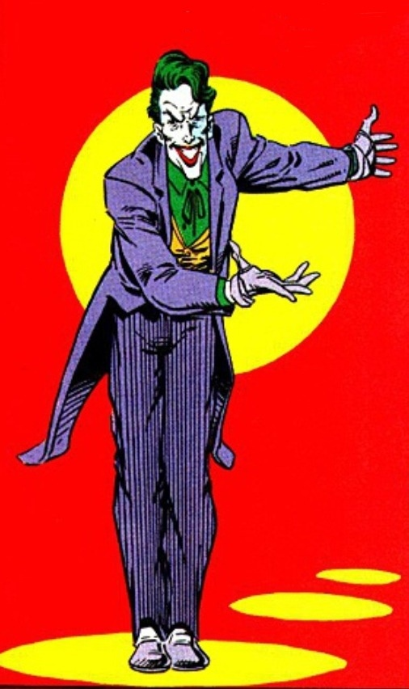
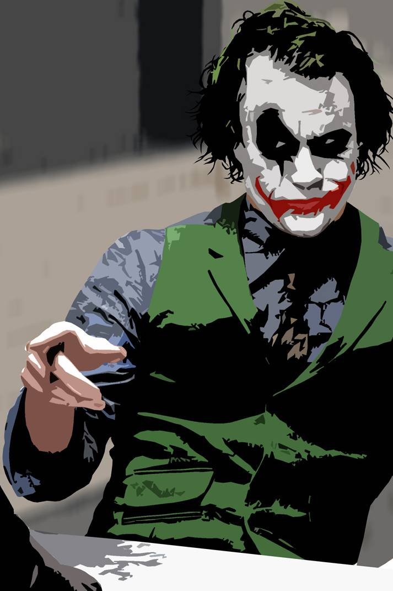
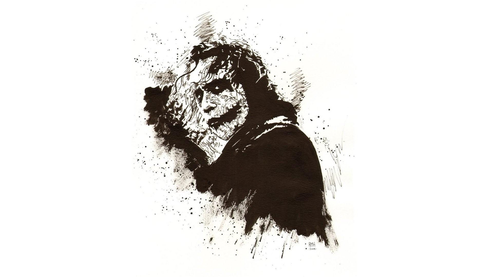

Main Characters
Sometimes I remember it one way, sometimes another
...if I'm going to have a past, I prefer it to be multiple choice!
Jack Nickolson
Heath Ledger
Joachim Phoenix
Personal Information
See, I'm not a monster. I'm just ahead of the curve.

- Name: Just call me "The Joker"
- Birthday: 01/09/1940
- Place of Birth: Gotham City
- Role: Batman's main enemy.
To them, you're just a freak, like me! They need you right now, but when they don't, they'll cast you out, like a leper! You see, their morals, their code, it's a bad joke. Dropped at the first sign of trouble. They're only as good as the world allows them to be. I'll show you. When the chips are down, these... these civilized people, they'll eat each other. See, I'm not a monster. I'm just ahead of the curve.
Work Experience
"If you're good at something, never do it for free."

-
1975-1985: I used the name of "Red Hood" to rob a factory.
But Batman appeared and frustrated my plans by making me fall into a corrosive substance that disfigured my face and stained my hair and skin green and white.
-
1965-1975: Cazavillanos y demás chusma
Atrapé a Gatubela a joker a Victor Fries lo dejé porque se me
congeló la capa
-
1962-1965: Aprendiz de superhéroes Hice pasantía
con Superman.
Opté por usar mascara porque no pude aprender a peinarme el
rulo
"I believe, whatever doesn't kill you, simply makes you... stranger."
We're Destined to Do This Forever.
Oh, you. You just couldn’t let me go, could you? This is what happens when an unstoppable force meets an immovable object. You are truly incorruptible, aren’t you? Huh? You won’t kill me out of some misplaced sense of self-righteousness. And I won’t kill you because you’re just too much fun. I think you and I are destined to do this forever.

Come here. Hey! Look at me. So I had a wife, beautiful, like you, who tells me I worry too much. Who tells me I ought to smile more. Who gambles and gets in deep with the sharks…look at me! One day, they carve her face. And we have no money for surgeries. She can’t take it. I just want to see her smile again, hmm? I just want her to know that I don’t care about the scars. So… I stick a razor in my mouth and do this…[he mimics slicing his mouth open]…to myself. And you know what? She can’t stand the sight of me! She leaves. Now I see the funny side. Now I’m always smiling!
Now I'm Always Smiling!